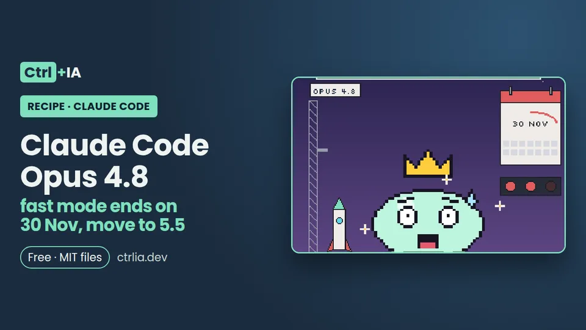

Recipe · Basic · 5 min
Claude Code Opus 4.8: fast mode ends on 30 Nov, move to 5.5
Opus 4.8 fast mode in Claude Code will return errors from 30 Nov 2026. Check whether it affects you and move to Opus 5.5 in sessions, settings and CI.

Tested with Claude Code 2.1.316 · reviewed
See the files on GitHub Free · MIT license
The problem
Since 30 Oct 2026, Opus 4.8 fast mode is deprecated, and on 30 Nov 2026 it is removed: from that day on, fast mode requests with Opus 4.8 will return an error and will not fall back to normal Opus 4.8 on their own. If you use /fast with Opus 4.8, in a session, in your settings or in a CI script, it will stop working.
The solution
Move to Opus 5.5, which already has fast mode available (not in preview) and is also cheaper per token. First check whether it affects you, then migrate sessions, settings and scripts, and keep in mind what changes when you do.
1. What changes and who is affected
Fast mode is not another model: it is an Opus setting that answers up to 2.5 times faster at a higher price per token. According to the official documentation, it works on Opus 5.5, Opus 5 and Opus 4.8, not on Sonnet or Haiku; on Opus 5.5 it is available and on Opus 5 and 4.8 it is a research preview. Version 2.1.316 of the CHANGELOG adds the notice: Opus 4.8 fast mode is deprecated from 30 Oct 2026 and will be removed on 30 Nov 2026; after that, those requests will return an error and will not fall back to standard Opus 4.8.
It only affects you if you meet both conditions:
- you use fast mode: the ↯ icon next to the prompt,
"fastMode": truein your settings, or--settingswithfastModein scripts; - your model is Opus 4.8: you pinned it with
/model claude-opus-4-8,--model,ANTHROPIC_MODEL, themodelkey orANTHROPIC_DEFAULT_OPUS_MODEL.
It does not affect you if you use the opus alias on the Anthropic API (it already points to Opus 5.5), if you don't use fast mode, or if you work on Bedrock, Google Cloud's Agent Platform or Foundry, where fast mode is not available.
2. Check it in 1 minute
Inside Claude Code:
/statusshows version, model and account; the Login method row tells you whether you use a subscription (for example "Claude Max account") or an API key./fastwith no arguments lets you see whether fast mode is on or off; when it is on you will see "↯" next to the prompt./modelshows the current model.
Outside the session, look for Opus 4.8 pins in your settings and variables: in ~/.claude/settings.json and in your projects' .claude/settings.json or settings.local.json, the "model" and "fastMode" keys; in your shell, ANTHROPIC_MODEL and ANTHROPIC_DEFAULT_OPUS_MODEL; and in scripts or CI, any claude -p with --model claude-opus-4-8 together with --settings '{"fastMode": true}'. This grep checks it all at once (replace ~/projects with the folder where you keep your projects):
grep -rn --include='settings*.json' -e 'claude-opus-4-8' -e 'fastMode' ~/.claude ~/projects 2>/dev/null
env | grep -E 'ANTHROPIC_(DEFAULT_OPUS_)?MODEL'
grep -rn 'claude-opus-4-8' ~/projects --include='*.sh' --include='*.yml' --include='*.yaml' 2>/dev/nullIf claude-opus-4-8 appears nowhere and your model is opus or Opus 5.5, you don't need to do anything. Remember that the model chosen with --model or ANTHROPIC_MODEL only applies to that session, while /model saves it as the default.
3. Migrate: three steps
Step 1, change the model. In the session: /model opus (on the Anthropic API the alias resolves to Opus 5.5) or, to pin the exact version, /model claude-opus-5-5. If you had it pinned in settings or variables, change claude-opus-4-8 there to claude-opus-5-5 or to the opus alias, or remove the pin. Remember that a model in project or managed settings, or ANTHROPIC_MODEL in your shell, overrides your /model choice on every start.
~/.claude/settings.json, before and after:
// before
{ "model": "claude-opus-4-8", "fastMode": true }
// after
{ "model": "claude-opus-5-5", "fastMode": true }Step 2, turn on fast mode at the start of a new session: /fast, Space to turn it on and Enter to confirm, or "fastMode": true in your user settings. You will see "Fast mode ON" and the ↯ icon. Since 2.1.280, Opus 5.5 is the default fast mode model: if you turn on /fast with a model that doesn't support it, Claude Code switches to Opus.
/status # model and login method
/model claude-opus-5-5 # or /model opus
/effort status # Opus 5.5 starts at medium
/effort high # optional, if you want the level you had on 4.8
/fast # Space + Enter -> "Fast mode ON" and the ↯ iconStep 3, update scripts and CI. In claude -p, /fast only works if you start the session with fastMode in --settings (2.1.205 or later), so change the --model in those commands:
# before (will error from 30 Nov 2026)
claude -p --model claude-opus-4-8 --settings '{"fastMode": true}' "Review the tests"
# after
claude -p --model claude-opus-5-5 --settings '{"fastMode": true}' "Review the tests"If you need to stay on Opus 4.8 for some reason, turn fast mode off (/fast off): the removal only affects fast mode.
4. What changes when moving to Opus 5.5: price and effort
Fast mode pricing according to the official documentation, per million tokens:
| Model | Input | Output | Fast mode status |
|---|---|---|---|
| Opus 5.5 | 8 USD | 40 USD | Available |
| Opus 5 | 10 USD | 50 USD | Research preview |
| Opus 4.8 | 10 USD | 50 USD | Deprecated; errors from 30 Nov 2026 |
The price is flat across the whole 1M-token window. On a Pro, Max, Ultra, Team or Enterprise subscription, fast mode is not part of the plan limits: it is paid only with usage credits, even if you have plan usage left, and you need to have them enabled (otherwise /fast says "Fast mode requires usage credits"). On Team and Enterprise an Owner also has to enable it. On Console, Opus 5.5 fast mode depends on your organization's usage tier.
The effort trap: Opus 4.8 has high effort by default and Opus 5.5 medium. Also, a top-level effortLevel in your user settings (the old format) does not count for Opus 5.5. If you notice shallower answers after migrating, check with /effort status and pick the level with /effort high (Enter saves it as the default for that model; s, for the session only). Fast mode and effort combine: faster with less effort for simple tasks.
5. Turn on fast mode without overpaying
The first time you turn on fast mode in a conversation you pay, at the fast mode price and without cache, for all the context accumulated up to that point. The further along the conversation, the more it costs, so the documentation recommends turning it on at the start of the session. Fast mode and standard speed have separate caches: every later switch rereads part or all of the conversation without cache. The same happens when switching models: each model has its own cache (see usage limits).
So the ideal migration is: close the old session, open a new one with Opus 5.5 and turn on /fast before the first message.
Where do you see what you spent? On Pro, Max and Ultra, in claude.ai > Settings > Usage, Usage credits section (it includes fast mode without breaking it down); on Team and Enterprise, in the credits row of /usage; on Console, in Usage and Cost grouping by "Speed (Research Preview)".
For teams with several simultaneous sessions, fastModePerSessionOptIn: true makes each session start with fast mode off:
{
"fastModePerSessionOptIn": true
}If you run out of credits mid-session, Claude Code retries at standard speed and tells you with "Fast mode disabled · usage credits exhausted".
6. If something fails after migrating
The messages you may see and what to do with each are in "Common mistakes" below. If from 30 Nov you see errors in an old script, look for a forgotten --model claude-opus-4-8 together with fast mode using the grep from step 2.
Check it
After migrating, open a new session and run /status (model), /effort status and /fast without confirming. What we tested on 1 Nov 2026 with Claude Code 2.1.316 on Linux: /effort status with --model claude-opus-5-5 returned "auto (currently medium)", which confirms the default effort; and claude -p "/fast" answered "Fast mode unavailable: Fast mode is not available in the Agent SDK", as the documentation describes for -p without fastMode in --settings. We did not turn on fast mode, because it is charged to usage credits (real spending), and the post-30 Nov error cannot be reproduced before that date: we report it as the CHANGELOG announces it.
Why it works
Fast mode is a per-model setting, and the removal only affects the Opus 4.8 + fast mode combination. Changing the model to Opus 5.5 (or to the opus alias) everywhere you pinned it keeps fast mode without touching anything else. Turning it on at the start of the session avoids paying for all the accumulated context without cache. Sources: fast mode, model configuration, caching when turning on fast mode, commands and the CHANGELOG.
Common mistakes
- "Fast mode requires usage credits" → on a subscription, fast mode is paid only with usage credits → enable them in claude.ai > Settings > Usage or with
/usage-credits. - "Fast mode has been disabled by your organization" → fast mode is not enabled in your organization, or managed settings set
fastMode: falseor require per-session opt-in → talk to your administrator. - "is not in your organization's allowed models" → your organization's
availableModelslist excludes that Opus → ask for it to be added or use an allowed one. - "Fast mode unavailable due to network connectivity issues" → the availability check goes straight to api.anthropic.com and your network blocks it (typical behind a gateway) → the documentation suggests allowing that egress or
CLAUDE_CODE_SKIP_FAST_MODE_NETWORK_ERRORS=1. - "Fast mode is not available in the Agent SDK" in
claude -p→ expected if you didn't start the session with--settings '{"fastMode": true}'→ add it to the command. - Errors in an old script from 30 Nov → a forgotten
--model claude-opus-4-8together with fast mode → change it toclaude-opus-5-5. - You pick Opus 5.5 with
/modeland it goes back to 4.8 on restart → amodelin project or managed settings, orANTHROPIC_MODELin your shell, wins on every start → change it there. - The ↯ icon turns grey → you have hit fast mode's own limit → carry on at normal speed; it comes back on its own when the wait is over.
FAQ
Do I need to do anything if I don't use /fast?
No. The removal the CHANGELOG announces is only for fast mode on Opus 4.8; it announces no changes for Opus 4.8 at normal speed.
What exactly happens on 30 November?
Fast mode requests with Opus 4.8 will return an error and will not fall back to standard Opus 4.8 on their own.
Is Opus 5.5 fast mode more expensive?
According to the official documentation it is cheaper than 4.8's: 8/40 USD per million input/output tokens versus 10/50. It still costs more than normal speed.
Does fast mode use my Pro or Max limit?
It is not part of the plan limits: it is charged directly to usage credits, even if you have plan usage left (see how much Claude Code costs).
What if I move to Opus 5 instead of 5.5?
The CHANGELOG asks you to migrate to Opus 5.5. On Opus 5, fast mode is still a research preview, at 10/50 USD.
Why does Opus 5.5 "think less" than my Opus 4.8?
Its default effort is medium (on 4.8, high) and an old effortLevel in your user settings doesn't apply to it. Use /effort high.
Can I use fast mode on Bedrock or Vertex?
No: according to the documentation, only on the Anthropic API (Console) and on subscription plans with usage credits.